通过Model编辑器，我们可以在图形用户界面（GUI）中构造简单的模型。对于更复杂的模型，您将需要学习如何编写SDF文件，或者urdf文件。但是现在，我们可以在Gazebo GUI中做所有事情！
Model 编辑器用户界面
要进入模型编辑器，点击菜单栏中的Edit并选择Model Editor，或使用快捷键Ctrl+M。物理模拟器将在您进入模型编辑器时暂停。
模型编辑器的界面看起来与之前Gazebo的UI界面相似，但有一些细微的区别。左侧面板和顶部工具栏现在只包含用于编辑和创建模型部分的小部件。显示模拟数据的底部工具栏被隐藏的，因为在编辑期间是没有模拟的
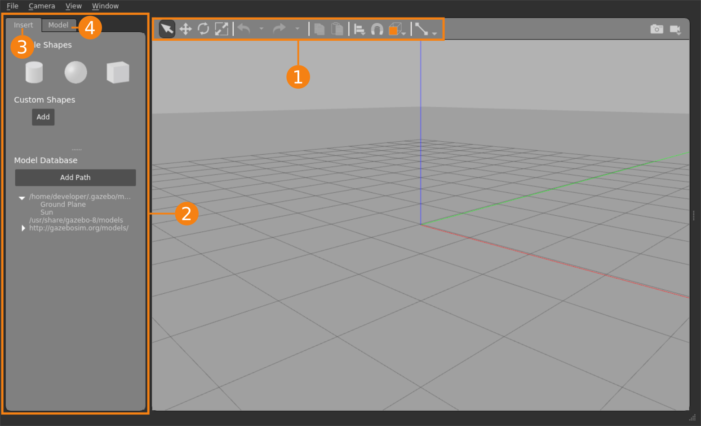
- Toolbar - 包括一些在编辑模式下的工具
- Palette - 也叫做左侧面板（Left Panel），有两个选项卡
- Insert tab - 用于添加links 或者 嵌套的模型
- Model tab -用于编辑Model的属性和内容
Palette (Left Panel)
此面板有两个选项卡：
insert ：这里可以添加links和models，下面有三个部分
- Simple Shapes: 这些是基本的几何图形，可以插入来形成模型中的links
- Custom Shapes:
Add按钮允许您从模型中的链接中导入自定义网格。它目前支持COLLADA (.dae)， 3D Systems (.stl)， Wavefront (.obj)和W3C SVG (. SVG)文件。 - Model Database: 有一个
model列表。它们可以像简单的形状一样插入到模型编辑器中。一旦插入，它们就被称为嵌套模型
Model：Model选项卡允许您设置要构建的模型的名称和基本参数。它显示了模型中的
links、joints、嵌套模型和插件的列表。这些参数也可以使用link链接检查器修改，可以使用如下方法中的任何一种打开它。- 双击在列表中的物体
- 在场景（Scene）中直接双击物体
- 右键选择在列表中的物体，选择
Open Link Inspector - 右键选择在场景中的物体，选择
Open Link Inspector
Toolbar
这工具栏和模拟仿真模式下的类似，在模型编辑器下的工具栏包括了一些与场景中的对象交互的工具。可用的工具有选择、平移、缩放、旋转、撤消和重做、复制和粘贴、对齐、捕捉、视图调整和联合创建
局限
模型编辑器支持通过编写SDF来完成的大部分基本模型构建任务。然而，有一些功能还没有可用:
- 编辑嵌套模型以及他的links
- 添加和编辑某些几何类型，例如平面和折线。
- heightmaps的支持
- CAD功能
构造一个机器人
下面介绍如何构造一辆简单的机器人
底盘
在Insert选项卡中，点击Box图标，移动到场景中的任何位置，再一次点击鼠标进行释放
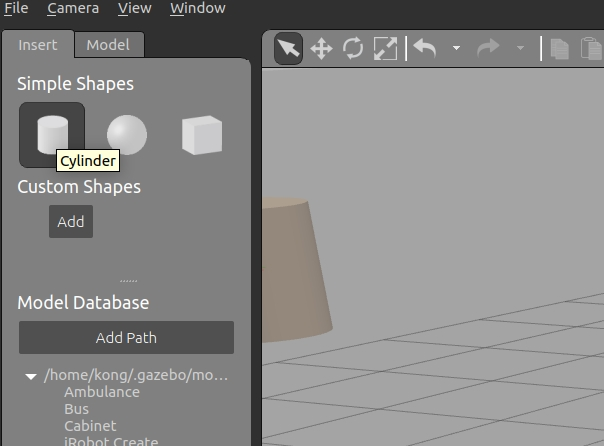
调整box的大小使其看起来像一个机器人的底盘。选择工具栏上的缩放模式的图标，然后点击在场景中的物体，在物体中会出现RGB颜色的标志，红色代表X轴，绿色代表Y轴，蓝色代表Z轴。把鼠标移动到蓝色标志上，蓝色的标志呈现高亮的状态，然后点击进行移动，物体会沿着Z轴变得扁平

将其调整为如下样式
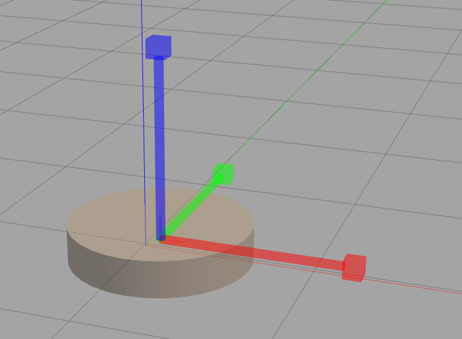
我们想让底盘更加接近地面，可以通过Link Inspector进行调整。双击物体就会弹出Link Inspector，滚至最下方找到
Pose选项卡，把z改为0.3m，然后在Link Inspector之外随机点击鼠标就可以看到变化。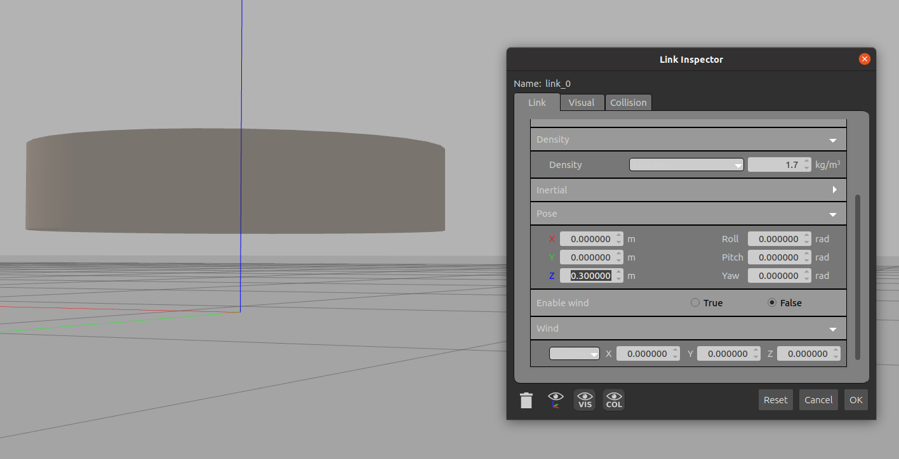
点击visual选项卡，会看到只有选项
visual，通过单击visual文本标签旁边的小箭头展开内容。向下滚动到Geometry部分，并改变Radius为0.5米和Length为0.2米。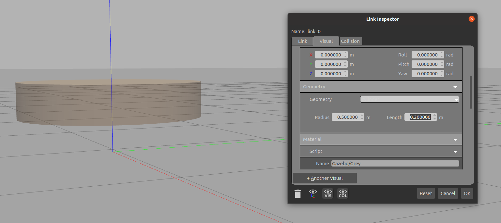
现在你应该看到一个更小的圆柱体在一个更大的圆柱体中。这是正常的，因为我们只改变了视觉几何，而没有改变判断碰撞范围的大小。“visual”是link的图形表示，并不影响物理模拟。另一方面，物理引擎使用“collision”进行碰撞检查。因此我们也要更新车轮的collision，点击collision选项卡，展开唯一的碰撞列表，并输入相同的几何尺寸。半径: 0.5m，长度: 0.2m。单击OK保存更改并关闭检查器。最后点击
OK保存。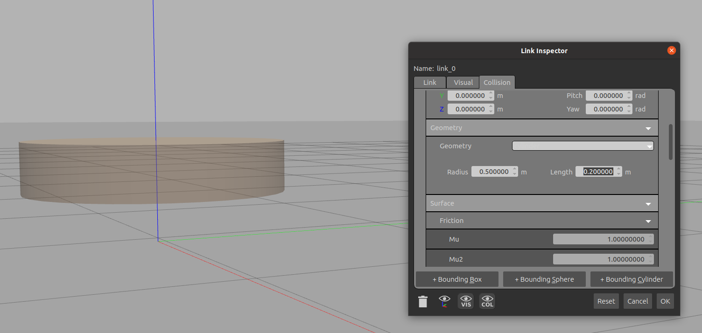
驱动轮
首先从左侧面板的Insert选项卡插入一个圆柱体。
圆柱体在其默认的方向不会很好地滚动。让我们使用链接检查器沿着X轴旋转它。双击圆柱体，滚动到底部的pose部分，并将滚动更改为1.5707弧度(90度)，然后在框外单击。先不要关闭检查器。
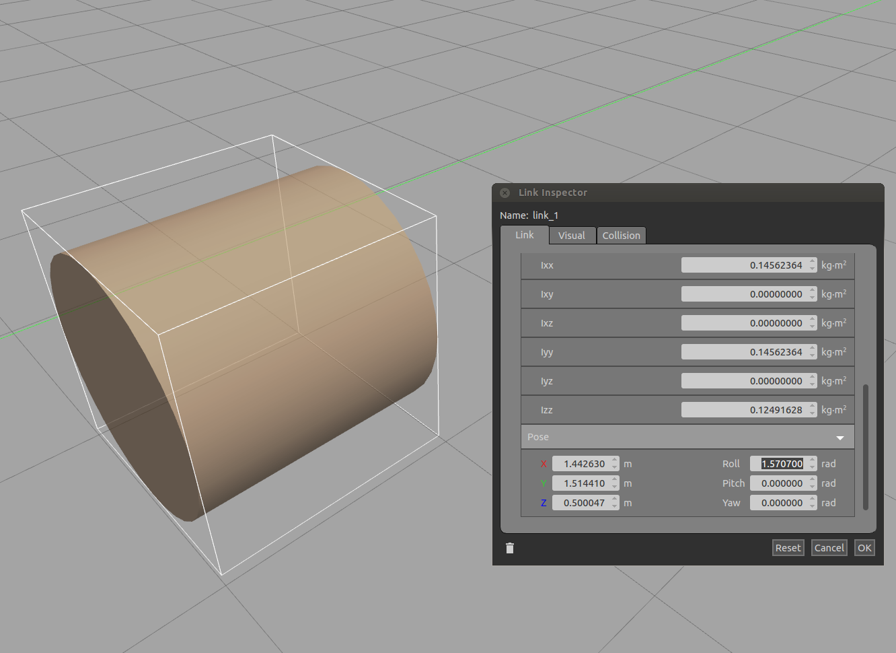
下一步，调整车轮的大小给它精确的尺寸。转到Visual选项卡查看这个
link的视觉效果列表。应该只有一个选项visual。通过单击visual文本标签旁边的小箭头展开内容。向下滚动到Geometry部分，并改变Radius为0.2米和Length为0.1米。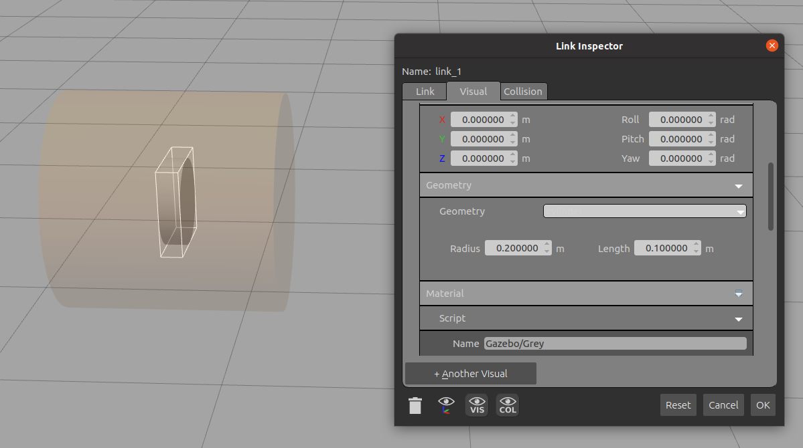
点击collision选项卡，并输入相同的几何尺寸。
Radius为0.2米和Length为0.1米。单击OK保存更改并关闭检查器。现在我们已经创建了我们的第一个车轮，我们将使用它作为模板在做一个。选择滚轮并单击顶部工具栏中的复制图标。
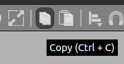
点击粘贴图标，并将鼠标移回场景插入复制。
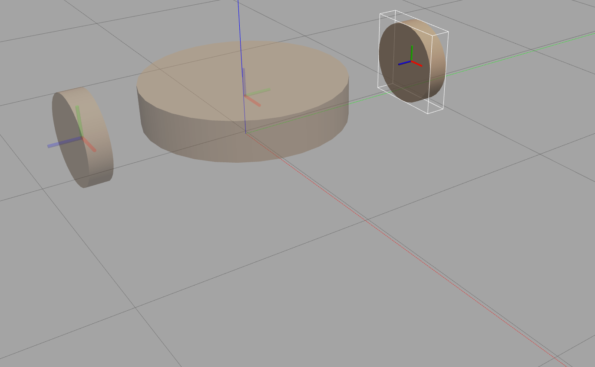
目前底盘和车轮都是自由的物体，我们需要给他们添加一定的约束（底盘一定要跟着车轮一起动），为此，我们需要添加车轮和底盘之间的
joints，点击工具栏上的Joint图标可以弹出Joint 创建框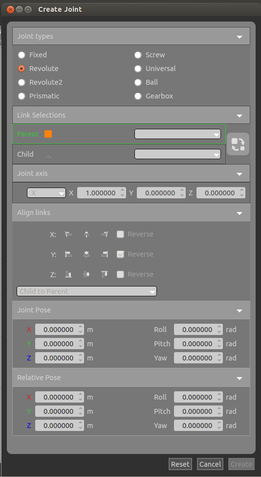
Joint 创建框中可以设置关于joints大量的属性，在配置任何属性之前，我们需要先选择joints的parent和child，这会表示哪两个link会有关系，对齐位置的时候是child跟parent进行对齐。移动鼠标到场景的底盘，底盘会高亮，单击之后就会确定parent，然后再选择child为左轮
现在会出现一根黄颜色的线，默认是一个
revolute joint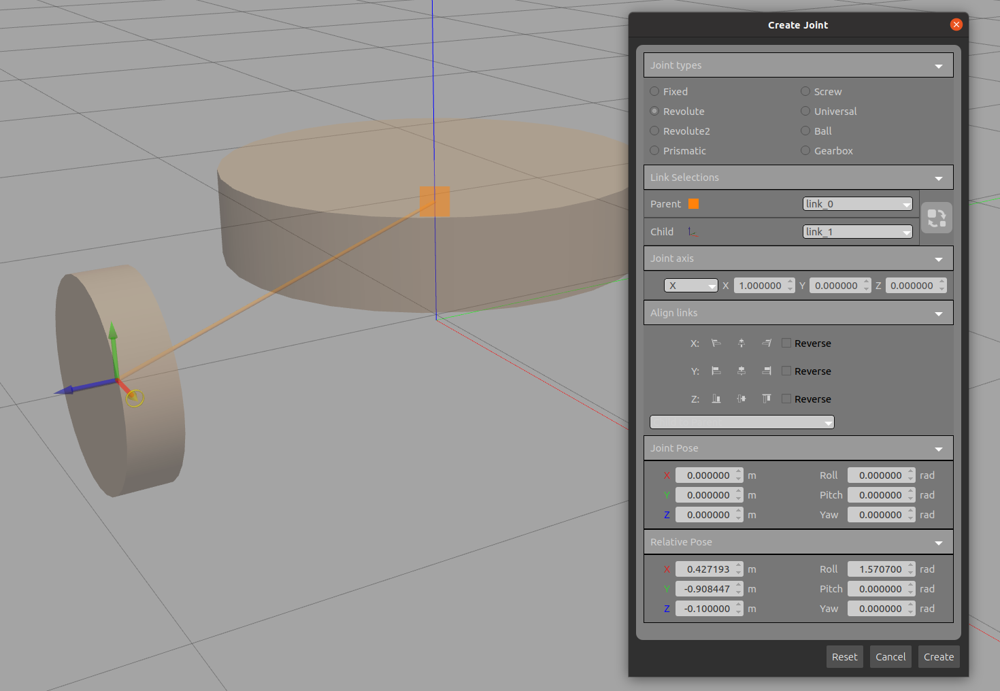
现在我们设置轮子的旋转轴，在Joint 创建框中，找到
Joint axis，设置旋转轴为Z(0,0,1)。现在我们可以注意到，在轮子的蓝色轴（Z轴）有一个黄色的圆圈，这代表的旋转轴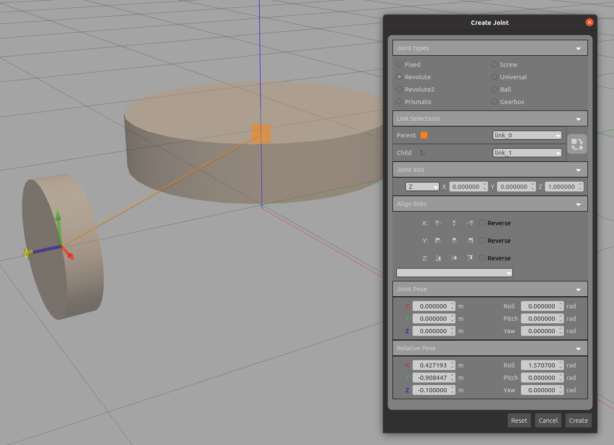
下面我们设置左轮相对于底盘的位置，我们想让左轮在X轴上和底盘是保持一致的，因此在X上选择中间的按钮
X align center，注意位置变动的左轮同时也会变色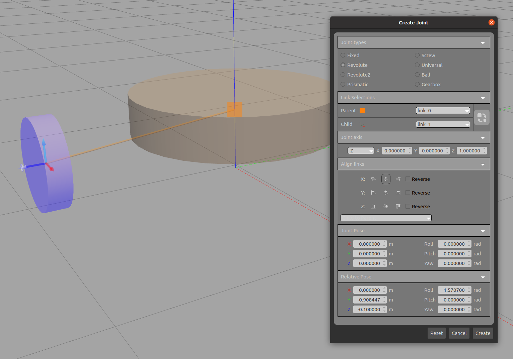
在Y轴上，我们需要让左轮子紧贴底盘的左边，即底盘Y轴的最小值需要紧贴左轮，我们选择左边的按钮
Y align min, 使得车轮能够内嵌在底座的内部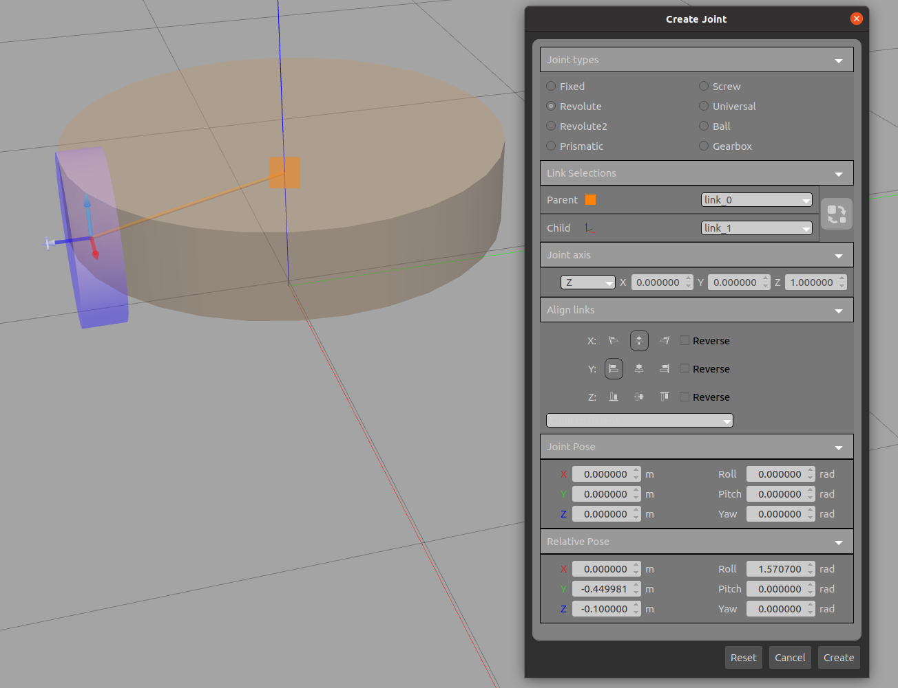
调整左轮的位置，左轮的半径为0.2m，双击左轮，打开左轮的link_inspector，设置link下pose的Z轴为0.2m，点击OK
将上面的操作重复应用到右轮上，注意Align links为
X align center和Y align max.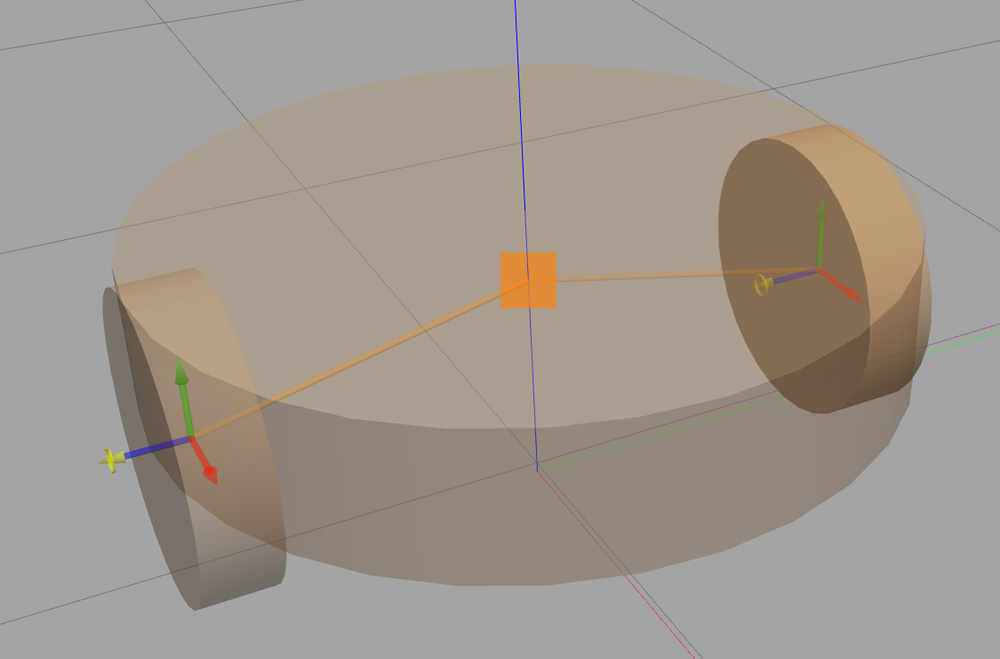
万向轮
首先在Simple Shapes里面选择球，然后移动到场景中
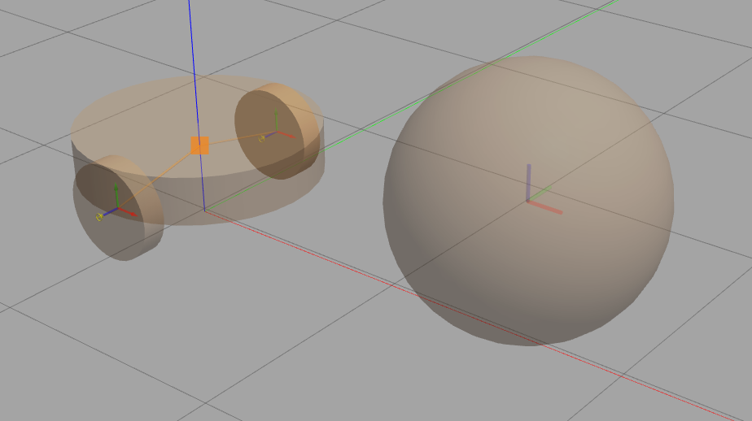
设定万向轮的大小，双击在场景中的球，在visual选项卡中，打开visual项，下拉在
Geometry中改变半径为0.1m。在collision选项卡中也要做同样的操作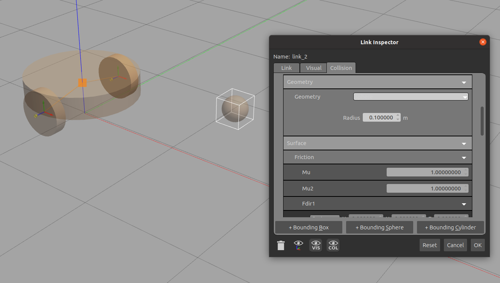
为万向轮添加一个joints，操作和驱动轮的类似，和之前的驱动轮不同，球在任意一个方向旋转都一样的，因此没有特定的旋转轴，joint type 为
Ball。我们可以看见一条现在的Joint连线的颜色发生了改变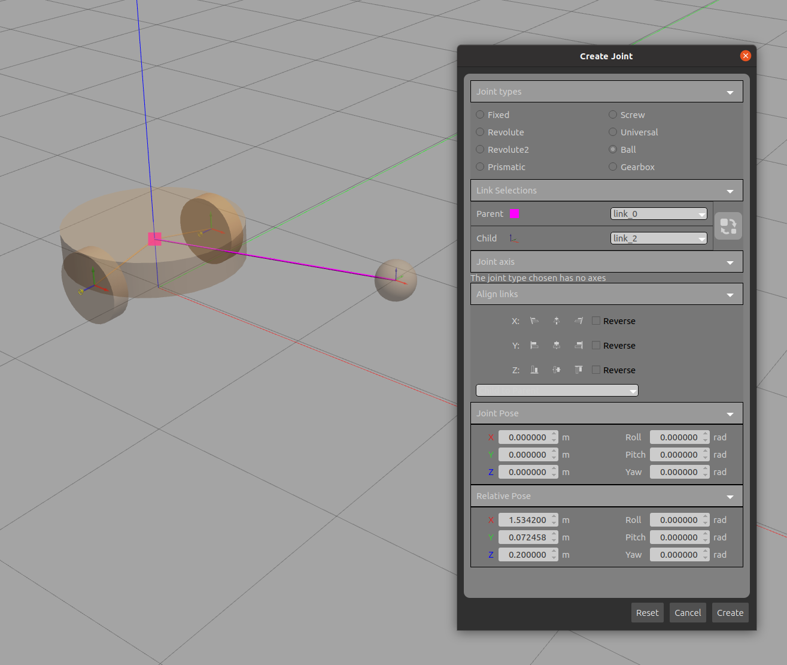
接下来对齐万向轮到底盘的前方，设置对齐方式为，
X align max,Y align center，使其在底盘的前方，为了使其使其在底盘的正下方好万向轮的位置，使其在地面上，打开万向轮的Link Inspector ，设置
Z为0.1m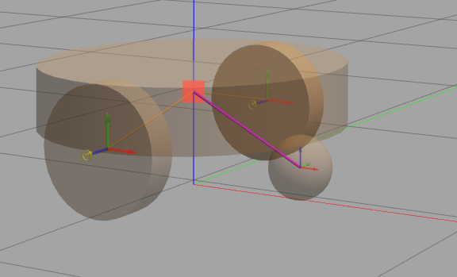
一样的操作为机器人添加一个后轮，这里的对齐方式是
x align min,y align center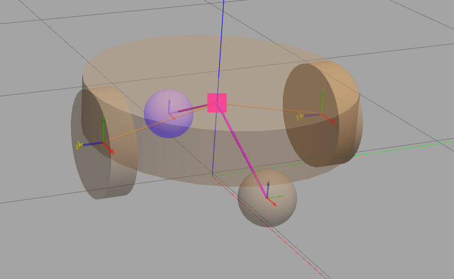
保存模型
通过转到
File菜单并选择Save as，保存模型。输入模型的名称，然后单击Save。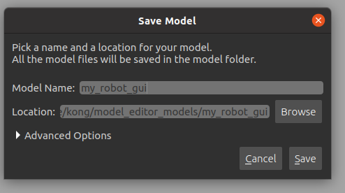
File->Exit Model Editor。Gazebo现在已经切换会正常模拟的模式。并且在Insert选项卡中会出现一个新的路径，有了我们刚刚建立好的模型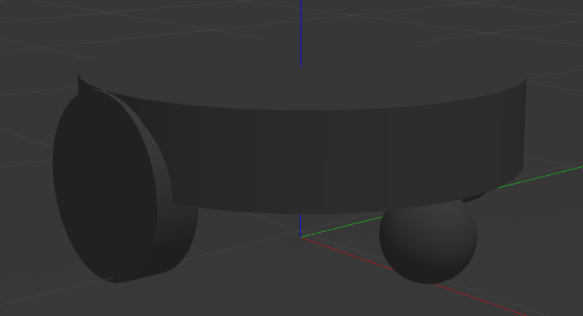
添加传感器
添加到汽车上的传感器是一个深度摄像机传感器，它将帮助我们检测到汽车前面的物体。在本教程中，我们将从模型数据库中插入一个现有的传感器模型。
转到面板(左面板)，并选择Insert选项卡，以查看Model Database部分中可用的模型列表。
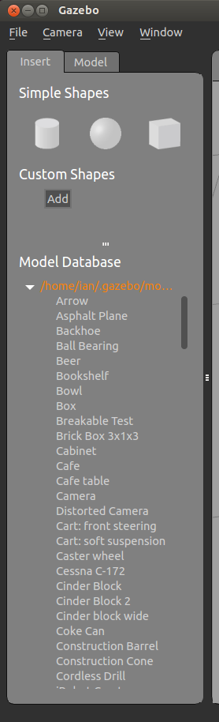
第一个列表包含您本地机器上可用的模型，路径即为列表标题。如果你是第一次使用，你可能不会在列表中看到很多模型。当你从在线模型数据库下载它们时，会有更多的模型出现。找到路径
http://gazebosim.org/models/的列表，并展开它以查看在线模型数据库中可用的模型。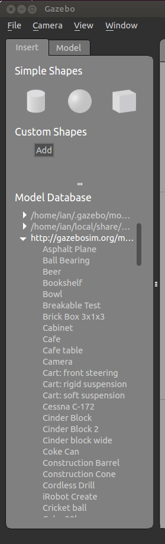
模型是按照字母表排序的，下拉列表找到Depth Camera， 点击后会开始下载，需要等待几秒钟
下载完成后，你就会在场景中看见一个深度摄像机，它看起来想是一个立方体。将其移动到机器人的前面
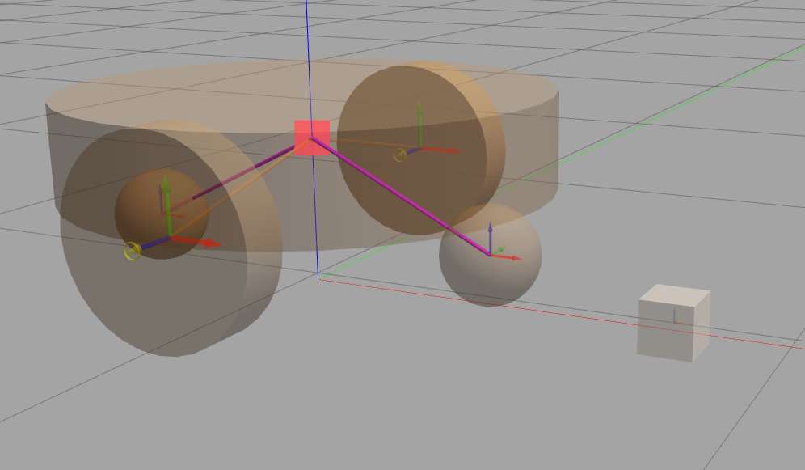
可通过平移工具将其移动到机器人底座的上方，